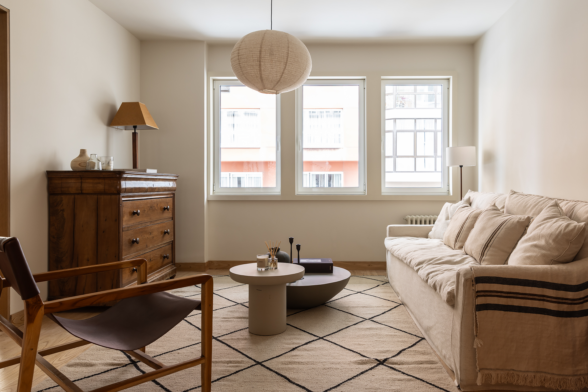
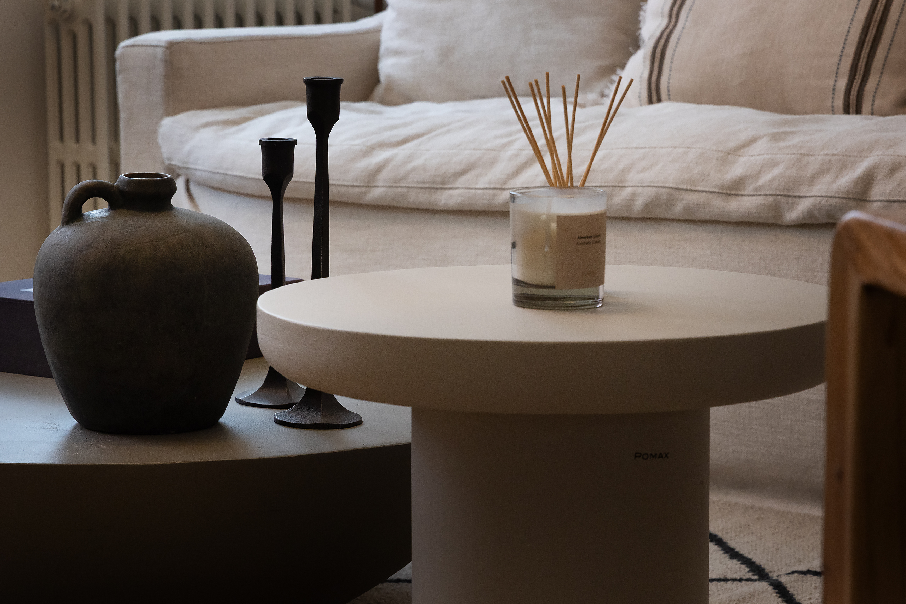
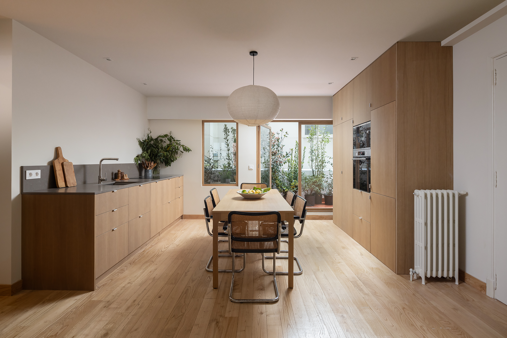
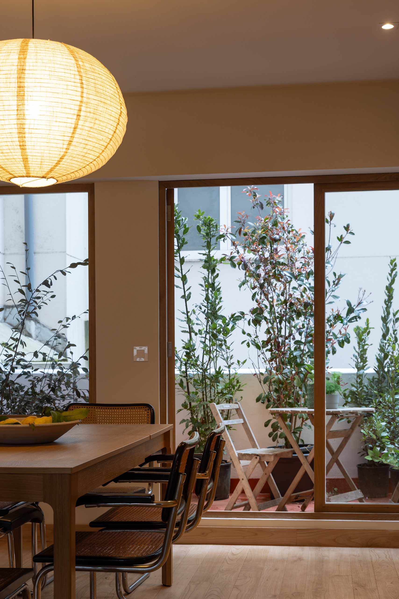
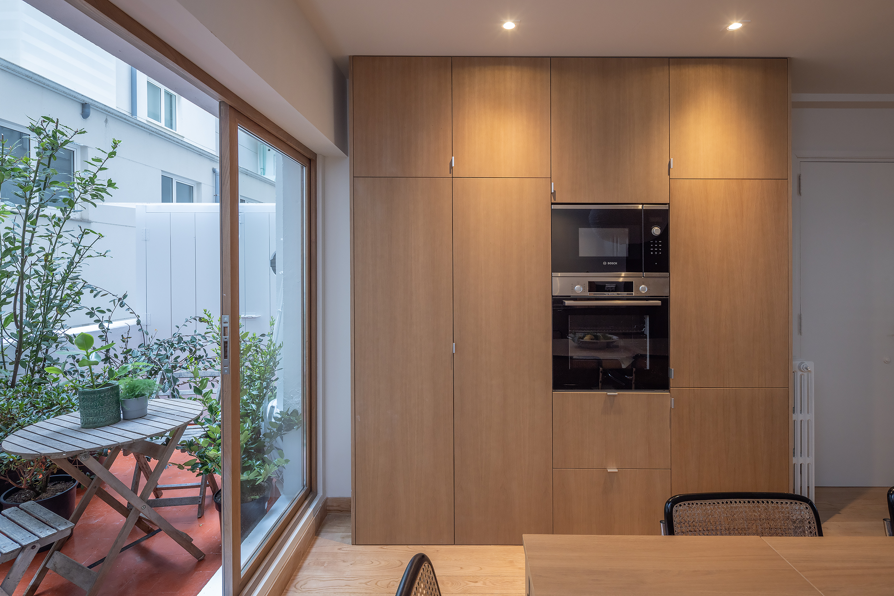
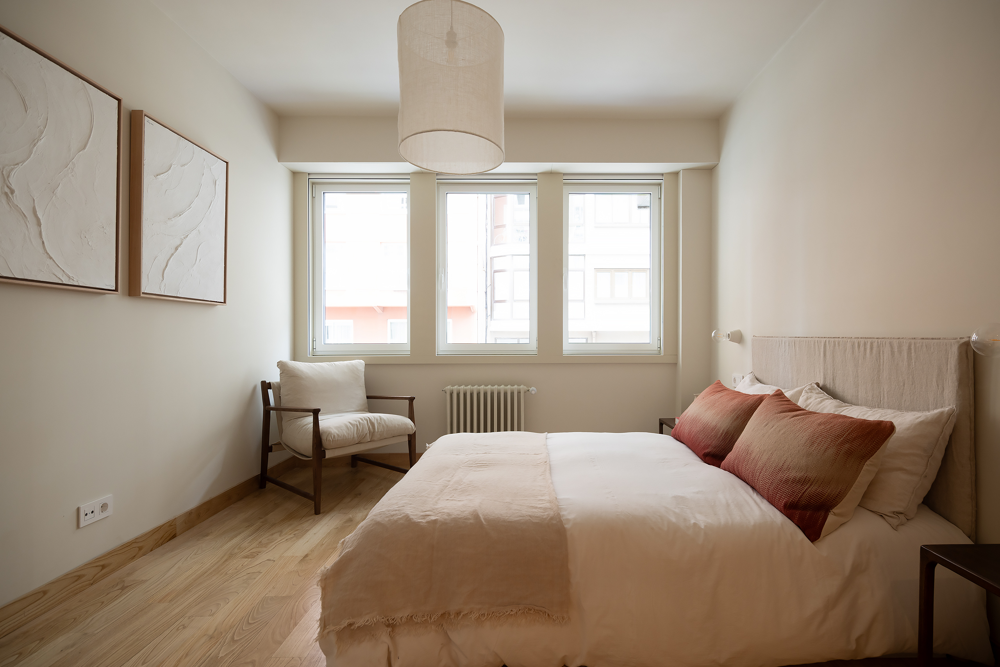
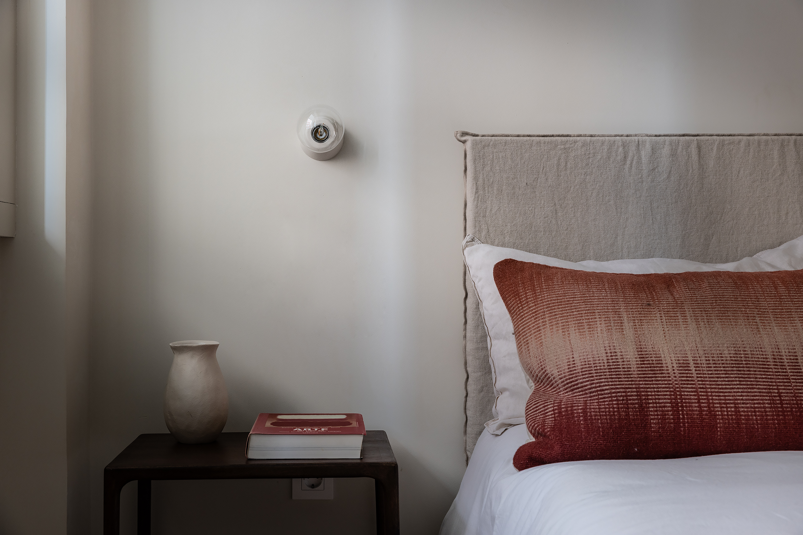
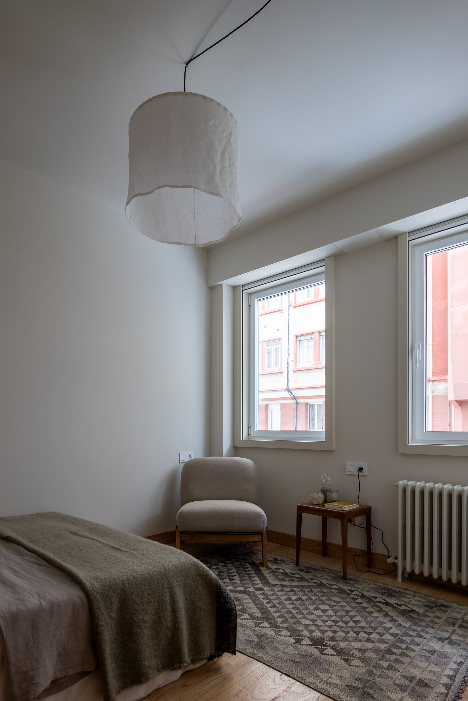
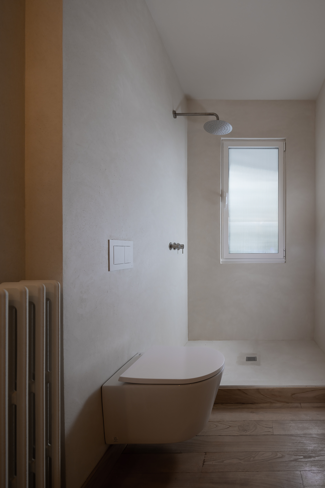
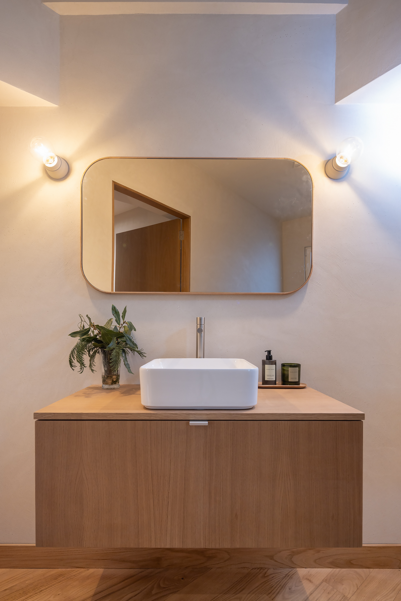

Cuando entramos por primera vez en este espacio, una antigua academia abandonada durante muchísimos años, nos dimos cuenta inmediatamente de las enormes posibilidades que tenía para convertirla en vivienda. Al ser un proyecto de autopromoción, pensamos en el producto que nos gustaría encontrar si fuéramos nosotros los clientes finales. La propuesta que nos planteamos fue la de la serenidad como punto de partida, y cada decisión responde a una búsqueda clara: construir un refugio contemporáneo que respire calma. Uno de los elementos más reconocibles del proyecto es la combinación de blancos cálidos y madera, una fórmula que crea una atmósfera serena y acogedora, donde todo parece respirar con calma.





Esa idea de "blancos cálidos" es una constante en todo el diseño del interiorismo. El secreto está en evitar el blanco puro. Trabajamos con una paleta de blancos rotos que dialogan entre sí a través de matices cálidos. En este apartamento, esa base neutra se convierte en un telón de fondo tranquilo sobre el que destacan los acentos: la madera de roble, la piedra gris de las encimeras, el acero inoxidable, el verde de las plantas, el rojo de los textiles, etc… La cocina, uno de los espacios más exigentes en términos de diseño, se resuelve con precisión casi quirúrgica, pensado milimétricamente para alcanzar el máximo almacenamiento. Nosotros diseñamos siempre cocinas a medida con nuestros carpinteros de confianza, lo que nos permite un control absoluto del espacio y del lenguaje material. Algo similar ocurre en los dormitorios, donde la optimización del espacio es también fundamental. La carpintería, de nuevo, actúa como herramienta estructural del diseño. El vestidor en roble que da paso al baño de la habitación principal es otra de las claves del proyecto. Finalmente, los dos baños se conciben como un espacio funcional, sí, pero abordado desde una mirada sensible que lo transforma en un refugio de desconexión y relajación, realizados en microcemento blanco cálido, en sintonía con la atmósfera que recorre toda la vivienda.




